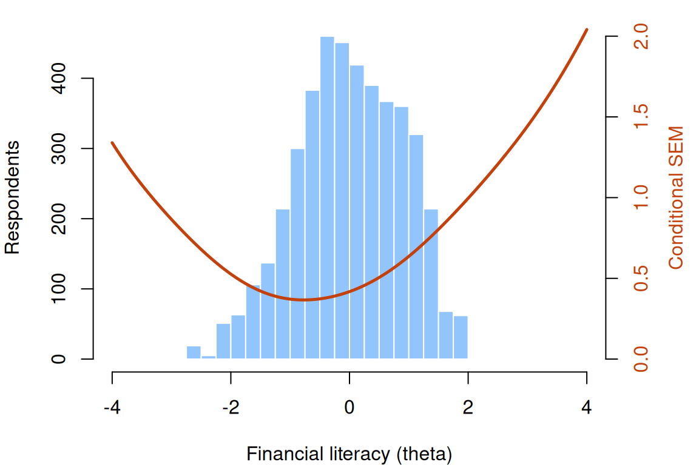
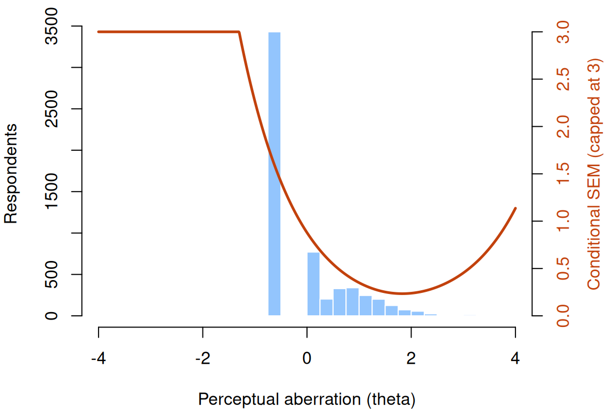

Information, precision, and short forms
What this is for
How precise is a score? Classical test theory gives one answer for everyone, yet a test measures well where its items are and poorly where they aren’t, so a respondent in the middle of a well-built test and one far above it get very different precision from the same items. Item response models put this in numbers. The curvature of a respondent’s likelihood becomes information, information adds up across items, and one over its square root is a standard error that changes along the scale. This lesson builds that machinery for the Rasch model, the 2PL and the 3PL, then uses it for two jobs: seeing where a real test is precise, and choosing a few items that are precise where a decision is made.
Goals
By the end of this lesson you should be able to:
- explain why the curvature of a respondent’s log likelihood measures how precisely their \(\theta\) is estimated;
- write down item information for the Rasch model, the 2PL and the 3PL, and say where each peaks and why;
- add item information into test information and turn it into a conditional standard error of measurement;
- read a test information curve against the distribution of respondents, and say for whom a test is precise;
- build a short form targeted at a point on the scale, and say what it gives up elsewhere.
Core ideas
Information is the curvature of the likelihood
Nothing in that argument was specific to coins. Take one respondent, hold the item parameters fixed, and treat \(\theta\) as the unknown: the observations are that respondent’s answers, and the log likelihood for \(\theta\) is a sum over items (Birnbaum, 1968; Lord, 1980). Its curvature says how sure we can be about this respondent’s \(\theta\). The general formula for that curvature, the information function, is in the Go deeper callout below; the rest of the lesson uses its special cases, one model at a time. What makes it sharper: more items, or better-placed ones?
Try it: one respondent’s likelihood
A respondent with true ability \(\theta\) answers Rasch items whose difficulties are spread (SD 1) around a centre you choose. The curve is the log likelihood for \(\theta\), shifted so its peak sits at 0.
At the defaults this respondent gets 3 of 10 right, and the estimate, −1.01, lands two standard errors (0.75 each) below the true 0.5. With 40 items the curve narrows: the estimate is 0.49 and the standard error 0.35, about half, as four times the items should give. Put 10 items far above the respondent (mean \(b\) = 3) and nothing is right: the curve never turns over, which is a problem for Estimating abilities.
Item information for the Rasch model, the 2PL and the 3PL
Each item adds one term to the curvature. Under the Rasch model that term is \[I_i(\theta) = P_i(\theta)\,\big(1 - P_i(\theta)\big),\] the variance of a single 0/1 response. It is largest, 1/4, where \(P_i = 1/2\), which under the Rasch model is at \(\theta = b_i\), and it fades on either side: a respondent far above or below an item almost always gives the answer we’d have predicted, and a predictable answer carries little news. The Go deeper callout above gives the general formula it comes from.
The 2PL multiplies it by the squared slope, \[I_i(\theta) = a_i^2\,P_i(\theta)\,\big(1 - P_i(\theta)\big),\] so an item with \(a = 2\) carries four times the information of a Rasch item at its peak, over a narrower band.
Information is where that weighting shows up in precision. Each term of the score equation is \(a_i\) times a Bernoulli residual, so its variance is \(a_i^2 P_i(1-P_i)\): the item’s weight, squared, times the Bernoulli variance. Items that count for more in the score also tell us more about \(\theta\), and an item with a slope near zero tells us almost nothing wherever it sits.
The 3PL adds a lower asymptote \(c\), and the information (the expected information; see the callout above) becomes \[I_i(\theta) = a_i^2\,\frac{\big(P_i - c_i\big)^2}{(1 - c_i)^2}\,\frac{1 - P_i}{P_i}.\] With \(c > 0\) it falls, most of all below the item’s difficulty, where a correct answer may be a guess and so says less about \(\theta\); the peak moves above \(b\) (problem 1 finds by how much). What fixing \(c\) or giving it a prior does to information at the bottom of the scale is for Guessing and priors.
Try it: an item’s information curve
Raise the slope to 2 and the peak rises to 1.000, four times the Rasch item’s, over a narrower range; at 0.5 it falls to 0.063. With \(a = 1\) and \(c = 0.25\) the peak drops to 0.155 and moves up to 0.31, and the left side sinks further than the right.
Information adds; precision follows
Local independence lets item information add: the test information is \[I(\theta) = \sum_i I_i(\theta),\] and the conditional standard error of measurement (CSEM) at \(\theta\) is \[SE(\theta) = \frac{1}{\sqrt{I(\theta)}}.\]
The CSEM replaces that one number with a curve, low where many informative items sit and rising where they run out, which need not be at the extremes of the respondents. Samejima (1977) argued for this standard error, rather than reliability, as the index of how dependable a score is, and Kolen, Zeng and Hanson (1996) carry it to a reported score scale. The standard error of one respondent’s estimate evaluates the CSEM at their \(\hat\theta\): Estimating abilities picks up there.
Try it: build a test
Choose how many items, where they sit and how steep they are. The curve is the CSEM; the shading is where respondents are (a standard normal). The dashed line is the one SEM this test would get if its error variance were averaged over those respondents, CTT style.
At the defaults the CSEM is 0.49 at the centre and 0.66 two SDs out, so the one SEM, 0.53, is too large for the middle and too small at the edges. Forty items shrink every CSEM by \(\sqrt 2\) (0.49 becomes 0.35); doubling the slope instead takes the centre to 0.29. Move the mean difficulty to 1.5 with a spread of 0.3, and the CSEM is 0.47 at \(\theta = 2\) and 1.30 at \(\theta = -2\): the test now measures well where few respondents are.
Targeting: a test is precise where its items are
The test information curve is the Wright map with error bars. Read against the distribution of respondents, it says for whom a test is precise, and the design question turns around: given the respondents we care about, where should the items go? Lord (1977) set out test construction this way: specify the information you need along the scale (a target information function), then add items until their sum reaches it. A test that must rank everyone wants its items spread across the population; a test that makes one pass/fail decision wants them bunched at the cut. What a CSEM means for a reported score, and for respondents near a cut score where information is low, is the subject of What does a score mean?.
Short forms
Information turns “precise quickly” into something we can compute. If a respondent will answer only five items, which five? Information at a target \(\theta\) is a sum over the chosen items, so the best five are the five most informative there, and they may be poor elsewhere. Other costs don’t show in the information curve: a short form covers less of the construct’s content, and its validity has to be checked on its own (Smith, McCarthy & Anderson, 2000). Choosing items one at a time, each the most informative at the current estimate, is adaptive testing: Item banks and adaptive testing.
Try it: pick a five-item form
Here are the 18 items of the financial-literacy test analysed below, with their 2PL slopes and difficulties. Pick five and a target \(\theta\).
The default form (the first five items) gives 1.72 at \(\theta = -1\), more than 35% of the possible forms. The best five give 4.18, more than half the full test’s 7.25. Move the target to 1.5 and the best five change completely (to FL_10, FL_5, FL_4, FL_17 and FL_11), while the whole test reaches only 1.55: there aren’t enough hard items to make this test precise for its strongest respondents.
Simulate
Does \(1/\sqrt{I(\theta)}\) describe how far estimates actually fall from the truth? The code below simulates Rasch responses from 4,000 respondents spread evenly from \(\theta = -3\) to 3, estimates each \(\theta\) by maximum likelihood with the difficulties treated as known, and compares the SD of \(\hat\theta - \theta\) within bins of true \(\theta\) with the CSEM. It is base R and runs in a second or two.
With the seed as written (20 items from \(b = -2\) to 2), the two agree closely across the middle: 0.53 and 0.52 near \(\theta = 0\), and 0.56 and 0.56 at \(\theta = 1.25\). At the ends they part. In the bins at \(\pm 2.75\), 34 and 38 respondents answered every item wrong or every item right and have no estimate at all, and the rest scatter less than the CSEM says (0.66 and 0.64 against 0.79): the respondents who would have had the largest errors are the ones who drop out. Change b to rep(1, 20), all items at one difficulty. Now 202 respondents in the lowest bin have no estimate, and the CSEM there, 1.49, is more than three times the scatter of the rest (0.42). Then try five items, seq(-2, 2, length.out = 5). The formula is a large-sample result; with few items it is a rough guide, and what to do about respondents with no finite estimate is for Estimating abilities.
Download this code to run it in your own R session.
With real data
A financial-literacy test
Our main example is bialowolski_2024_financial_literacy: 18 questions answered by 4,389 Polish adults (Bialowolski, 2024), about inflation, bonds, diversification, loan interest and the like. Its job is to be a test aimed near the middle of its population. A response is 1 for a correct answer and 0 otherwise, including “don’t know”, which every question offered (the deposit’s supplementary appendix lists the questions). Each question came in one of three wordings that differed in grammatical gender; the IRW table pools them, and so do we. Lusardi and Mitchell (2014) review research on financial literacy. Download the code to run every chunk yourself; it needs mirt (Chalmers, 2012).
Code
library(mirt)
# Each IRW table has a landing page (itemresponsewarehouse.org/tables/<name>/) with a
# CSV download. This link is pinned to one version of the data.
fl_url <- "https://redivis.com/api/v1/tables/datapages.item_response_warehouse_4:v7_0.bialowolski_2024_financial_literacy/rows?format=csv"
df <- read.csv(fl_url)
# resp is 1 for a correct answer and 0 otherwise ("don't know" included). Every
# respondent answered every item once; there are no waves.
long2wide <- function(df) {
wide <- tapply(df$resp, list(df$id, df$item), function(x) x[1])
as.data.frame(wide[, order(as.numeric(gsub("\\D", "", colnames(wide))))])
}
fl <- long2wide(df)
c(respondents = nrow(fl), items = ncol(fl), complete = sum(complete.cases(fl)))respondents items complete
4389 18 4389 Code
round(range(colMeans(fl)), 2) # proportion correct: the hardest and easiest items[1] 0.17 0.96Every respondent answered every item. The items run from hard (17% correct) to very easy (96%).
Code
# Rasch and 2PL. mirt writes the 2PL as a*theta + d; our difficulty is b = -d/a.
fl_r <- mirt(fl, 1, itemtype = "Rasch", verbose = FALSE)
fl_2 <- mirt(fl, 1, itemtype = "2PL", verbose = FALSE)
c(BIC_Rasch = round(extract.mirt(fl_r, "BIC")), BIC_2PL = round(extract.mirt(fl_2, "BIC")))BIC_Rasch BIC_2PL
81439 80012 Code
cf <- coef(fl_2, simplify = TRUE)$items
pars <- data.frame(a = cf[, "a1"], b = -cf[, "d"] / cf[, "a1"])
pars$info_at_peak <- pars$a^2 / 4 # a 2PL item's information at theta = b
round(pars[order(pars$b), ], 2)| a | b | info_at_peak | |
|---|---|---|---|
| FL_16 | 1.17 | -3.18 | 0.34 |
| FL_13 | 1.52 | -1.48 | 0.58 |
| FL_7 | 1.20 | -1.23 | 0.36 |
| FL_19 | 1.37 | -1.14 | 0.47 |
| FL_12 | 2.06 | -1.08 | 1.06 |
| FL_1 | 2.17 | -1.01 | 1.18 |
| FL_8 | 1.10 | -0.89 | 0.30 |
| FL_6 | 1.67 | -0.65 | 0.70 |
| FL_14 | 1.93 | -0.58 | 0.93 |
| FL_15 | 1.16 | -0.43 | 0.33 |
| FL_17 | 1.58 | -0.21 | 0.63 |
| FL_11 | 1.84 | -0.19 | 0.84 |
| FL_5 | 1.41 | 0.04 | 0.50 |
| FL_4 | 1.06 | 0.33 | 0.28 |
| FL_9 | 0.36 | 0.45 | 0.03 |
| FL_3 | 0.72 | 1.64 | 0.13 |
| FL_10 | 0.92 | 1.88 | 0.21 |
| FL_2 | 0.14 | 11.52 | 0.00 |
BIC prefers the 2PL (80,012 against 81,439), and we use it from here on. Most slopes are between 1 and 2.2 and most difficulties below 0. Two items have slopes far below the rest: FL_9 (0.36) and FL_2 (0.14, whose difficulty of 11.52 comes from dividing by a slope near zero, as chess problem Y15’s did in From the 1PL to the 4PL). The last column is each item’s information at its peak, \(a^2/4\): 1.18 for FL_1, 0.00 for FL_2.
Code
# Test information is the sum of the item informations; the conditional SEM is one
# over its square root. testinfo() and iteminfo() do the sums.
theta <- seq(-4, 4, by = 0.01)
I_fl <- testinfo(fl_2, matrix(theta))
at <- c(-2, -1, 0, 1, 2)
data.frame(theta = at, information = round(I_fl[match(at, theta)], 2),
csem = round(1 / sqrt(I_fl[match(at, theta)]), 2))| theta | information | csem |
|---|---|---|
| -2 | 3.61 | 0.53 |
| -1 | 7.25 | 0.37 |
| 0 | 5.73 | 0.42 |
| 1 | 2.47 | 0.64 |
| 2 | 1.01 | 1.00 |
Code
c(peak_at = theta[which.max(I_fl)], peak_information = round(max(I_fl), 2),
csem_at_peak = round(1 / sqrt(max(I_fl)), 2)) peak_at peak_information csem_at_peak
-0.77 7.45 0.37 Code
# The two flattest items, and what they add to the test information at its peak.
flat <- rownames(pars)[order(pars$a)[1:2]]
round(sapply(flat, function(i) iteminfo(extract.item(fl_2, i), theta[which.max(I_fl)])), 3) FL_2 FL_9
0.003 0.031 Code
# Information adds: the item informations at theta = 0 sum to the test information there.
all.equal(sum(sapply(colnames(fl), function(i) iteminfo(extract.item(fl_2, i), 0))),
testinfo(fl_2, matrix(0)))[1] TRUEThe test information peaks at 7.45 near \(\theta = -0.77\), where the CSEM is 0.37, and falls to 1.01 at \(\theta = 2\) (CSEM 1.00). The two flat items add 0.003 and 0.031 to the peak, under half a percent between them. The item informations sum to the test information exactly (all.equal returns TRUE).
Code
# The single-number summary: mirt's marginal reliability of the ability estimates,
# and the one SEM it implies on a scale whose ability SD is 1.
eap <- fscores(fl_2, full.scores.SE = TRUE)
rel <- empirical_rxx(eap)
c(reliability = round(unname(rel), 2), one_sem = round(sqrt(1 - unname(rel)), 2))reliability one_sem
0.81 0.44 Code
# The conditional SEM at the 2.5th and 97.5th percentiles of the respondents' estimates.
q <- quantile(eap[, "F1"], c(0.025, 0.975))
round(c(q, csem = 1 / sqrt(testinfo(fl_2, matrix(q)))), 2) 2.5% 97.5% csem1 csem2
-1.88 1.52 0.50 0.81 Summarised as one number, this test’s reliability is 0.81, which on a \(\theta\) scale with SD 1 implies one SEM of 0.44 for everyone. The curve says otherwise: 0.50 at the 2.5th percentile of respondents, 0.81 at the 97.5th, and 0.37 at its best. The single number averages over a curve that varies by more than a factor of two across these respondents.
Code
op <- par(mar = c(4, 4, 1, 4))
hist(eap[, "F1"], breaks = seq(-4, 4, 0.25), col = "#93c5fd", border = "white",
main = "", xlab = "Financial literacy (theta)", ylab = "Respondents")
par(new = TRUE)
plot(theta, 1 / sqrt(I_fl), type = "l", lwd = 2.5, col = "#c2410c", ylim = c(0, 2),
axes = FALSE, xlab = "", ylab = "")
axis(4, col.axis = "#c2410c"); mtext("Conditional SEM", side = 4, line = 2.5, col = "#c2410c")
Code
par(op)This is the Wright map with error bars that the Rasch lesson promised: the respondents’ estimates (bars) with the CSEM (line) laid over them. The CSEM is lowest just below the middle of the respondents and rises faster to the right, because the test has few hard items: only three difficulties are above 0.5.
A short form for decisions near \(\theta = -1\)
Suppose the test were used to decide who is offered a financial-education course, with the decision made at about \(\theta = -1\) (14% of these respondents have estimates below it). Five items, chosen for that point:
Code
# A five-item short form for decisions made near theta = -1: take the five items
# with the most information there. Compare it with the full test and with every
# possible five-item form (choose(18, 5) = 8,568 of them).
target <- -1
c(share_of_respondents_below_target = round(mean(eap[, "F1"] < target), 2))share_of_respondents_below_target
0.14 Code
item_info <- function(t) sapply(colnames(fl), function(i) iteminfo(extract.item(fl_2, i), t))
info_target <- item_info(target)
best5 <- names(sort(info_target, decreasing = TRUE))[1:5]
best5[1] "FL_1" "FL_12" "FL_14" "FL_6" "FL_13"Code
forms <- combn(18, 5)
all5 <- apply(forms, 2, function(k) sum(info_target[k]))
c(full_test = round(sum(info_target), 2), best_five = round(sum(info_target[best5]), 2),
median_five = round(median(all5), 2), five_90th_percentile = round(unname(quantile(all5, 0.9)), 2)) full_test best_five median_five
7.25 4.18 1.99
five_90th_percentile
2.88 Code
# What the targeted form gives up away from its target.
up <- 1.5
info_up <- item_info(up)
c(full_test = round(sum(info_up), 2), best_five = round(sum(info_up[best5]), 2),
best_five_for_1.5 = round(sum(sort(info_up, decreasing = TRUE)[1:5]), 2)) full_test best_five best_five_for_1.5
1.55 0.20 0.89 Code
round(1 / sqrt(c(best5_at_target = sum(info_target[best5]), best5_at_1.5 = sum(info_up[best5]))), 2)best5_at_target best5_at_1.5
0.49 2.22 The best five for \(\theta = -1\) (FL_1, FL_12, FL_14, FL_6 and FL_13) give information 4.18 there, 58% of the full test’s 7.25, from 28% of the items. The median of all 8,568 possible five-item forms gives 1.99, and the 90th percentile 2.88, so a form picked without looking at information is likely to give less than half as much. What the targeted form gives up shows at \(\theta = 1.5\): its information there is 0.20 (a CSEM of 2.22, against 0.49 at its target), and even the best five for \(\theta = 1.5\) would reach only 0.89.
So what should a practitioner do with a short form? It depends on an assumption about its use. If it serves one decision at a known point on the scale, precision elsewhere matters little, and information at that point is the right criterion. If it must rank everyone, or serve decisions no one has located yet, a form aimed at one point is a poor bet. When I know where the decisions are made, I build the short form from the items most informative there and report its CSEM at that point, not its reliability. Here, five well-chosen items give a CSEM of 0.49 at the decision point, against the full test’s 0.37; no five items, and not even all eighteen, make the test precise at \(\theta = 1.5\).
A scale aimed high
For contrast, a scale built for a different job: the Perceptual Aberration scale of the Wisconsin Schizotypy Scales–Short Forms (Winterstein et al., 2011), in christensen_2018_wsssf_5831. The data are 5,831 undergraduates who completed the scales as part of mass screening at one university (Christensen et al., 2018). Its job here is to show a test whose information sits, by design, far from most of the people who took it. The items are true–false statements, and the scale measures distortions of body image and perception (Chapman, Chapman & Raulin, 1978, who developed the full scale). They are keyed so that 1 is the response scored toward schizotypy (Christensen et al., 2018, p. 2537).
Code
wss_url <- "https://redivis.com/api/v1/tables/datapages.item_response_warehouse_5:v4_0.christensen_2018_wsssf_5831/rows?format=csv"
ws <- read.csv(wss_url)
ws <- as.data.frame(tapply(ws$resp, list(ws$id, ws$item), function(x) x[1]))
# Items are keyed so that 1 is the response scored toward schizotypy. The 60 items
# form four 15-item subscales (mi, pb, py, sa); their sum scores correlate like this:
sub <- sapply(c(mi = "mi", pb = "pb", py = "py", sa = "sa"),
function(s) rowSums(ws[, startsWith(names(ws), s)]))
round(cor(sub), 2) mi pb py sa
mi 1.00 0.59 -0.06 0.14
pb 0.59 1.00 0.00 0.19
py -0.06 0.00 1.00 0.31
sa 0.14 0.19 0.31 1.00Code
# We use one subscale, Perceptual Aberration (pb).
pb <- ws[, startsWith(names(ws), "pb")]
c(respondents = nrow(pb), items = ncol(pb))respondents items
5831 15 Code
round(range(colMeans(pb)), 2) # proportion endorsing each item[1] 0.04 0.16Code
sum(rowSums(pb) == 0) # respondents who endorse no item[1] 3430Code
round(mean(rowSums(pb) == 0), 2) # as a share of all respondents[1] 0.59The table holds four 15-item subscales. Their sum scores fall into two groups, Perceptual Aberration with Magical Ideation (correlation 0.59) and the two anhedonia scales (0.31), with correlations between −0.06 and 0.19 across the groups. One information curve assumes one \(\theta\), so we take one subscale, Perceptual Aberration. Each of its items is endorsed by 4% to 16% of respondents, and 3,430 of the 5,831 (59%) endorse none.
Code
pb_2 <- mirt(pb, 1, itemtype = "2PL", verbose = FALSE)
cfp <- coef(pb_2, simplify = TRUE)$items
round(c(min_b = min(-cfp[, "d"] / cfp[, "a1"]), max_b = max(-cfp[, "d"] / cfp[, "a1"]),
min_a = min(cfp[, "a1"]), max_a = max(cfp[, "a1"])), 2)min_b max_b min_a max_a
1.44 2.24 1.65 3.12 The difficulties run from 1.44 to 2.24 and the slopes from 1.65 to 3.12. Every item sits well above the average respondent (at 0), and every slope is above the median slope of the financial-literacy items.
Code
I_pb <- testinfo(pb_2, matrix(theta))
at <- c(-1, 0, 1, 2, 3)
data.frame(theta = at, information = round(I_pb[match(at, theta)], 2),
csem = round(1 / sqrt(I_pb[match(at, theta)]), 2))| theta | information | csem |
|---|---|---|
| -1 | 0.19 | 2.27 |
| 0 | 1.29 | 0.88 |
| 1 | 8.18 | 0.35 |
| 2 | 17.50 | 0.24 |
| 3 | 4.86 | 0.45 |
Code
c(peak_at = theta[which.max(I_pb)], peak_information = round(max(I_pb), 2),
csem_at_peak = round(1 / sqrt(max(I_pb)), 2)) peak_at peak_information csem_at_peak
1.83 18.22 0.23 Code
# Where the respondents are: everyone who endorsed nothing gets the same estimate.
eap_pb <- fscores(pb_2)[, 1]
c(estimate_for_score_zero = round(unique(eap_pb[rowSums(pb) == 0]), 2),
csem_there = round(1 / sqrt(testinfo(pb_2, matrix(unique(eap_pb[rowSums(pb) == 0])))), 2),
share_with_csem_below_0.4 = round(mean(1 / sqrt(testinfo(pb_2, matrix(eap_pb))) < 0.4), 2)) estimate_for_score_zero csem_there share_with_csem_below_0.4
-0.55 1.49 0.16 Code
op <- par(mar = c(4, 4, 1, 4))
hist(eap_pb, breaks = seq(-4, 4, 0.25), col = "#93c5fd", border = "white",
main = "", xlab = "Perceptual aberration (theta)", ylab = "Respondents")
par(new = TRUE)
plot(theta, pmin(1 / sqrt(I_pb), 3), type = "l", lwd = 2.5, col = "#c2410c", ylim = c(0, 3),
axes = FALSE, xlab = "", ylab = "")
axis(4, col.axis = "#c2410c"); mtext("Conditional SEM (capped at 3)", side = 4, line = 2.5, col = "#c2410c")
Code
par(op)The information peaks at 18.22 at \(\theta = 1.83\), a CSEM of 0.23, lower than the financial-literacy test reaches anywhere. At \(\theta = 0\) the CSEM is 0.88; at \(\theta = -1\) it is 2.27. Everyone who endorsed nothing gets the same estimate, −0.55, where the CSEM is 1.49, and only 16% of respondents have a CSEM below 0.4. For most of these students, the scale says little more than “not high”.
That is what a screening scale is for. Its items are ones few people endorse, so that endorsing several picks out the few respondents high on the trait; its precision is spent at the high end, where a screen makes its decisions. The curve that would be a problem for ranking all 5,831 students is the right shape for finding the ones to invite for a follow-up interview. Whether a test is precise is always a question of where, and for which decision.
Problems
- The 3PL’s information. Starting from \(P = c + (1 - c)L\) with \(L = \text{logit}^{-1}(a(\theta - b))\) and the general formula \(I = P'^2/[P(1-P)]\), fill in the algebra that gives the 3PL item information \(a^2\frac{(P - c)^2}{(1 - c)^2}\frac{1 - P}{P}\). Then show that it peaks at \(\theta = b + \frac{1}{a}\log\frac{1 + \sqrt{1 + 8c}}{2}\), and check the answer against the widget with \(a = 1\) and \(c = 0.25\). (PS3#1)
- Three items. A test has three Rasch items with \(b = -1, 0, 1.5\). Write down the test information, plot it, and find where it is largest. What is the CSEM there, and at \(\theta = 3\)? Which single item would you add to bring the CSEM at \(\theta = 3\) below 1? (PS4#1)
- What can go? In the financial-literacy test, which three items could you drop with the least loss of information below \(\theta = 0\)? Define “below \(\theta = 0\)” yourself (a point, an average over a range, an average over the respondents there), and say whether your answer depends on the choice.
- Design a form. Ten Rasch items have difficulties \(-2.5, -2, -1.5, -1, -0.5, 0, 0.5, 1, 1.5, 2\). Find the best five-item form for \(\theta = -1\) and its CSEM there. Then draw ten random five-item forms and compare. How often does a random form come within 10% of the best one’s information? (PS6#3)
- Is it a flaw? A colleague reads the Perceptual Aberration output and says the scale is imprecise for 84% of respondents and should be revised. Write a paragraph in reply. For which uses is the colleague right, and for which not? What would you change if the scale had to rank all students, and what would that cost the screen?
- Challenge (open): is the curve right? A CSEM curve is computed from the model, so it inherits the model’s assumptions (one \(\theta\), local independence, the right item curves). How would you check whether the CSEM curve for the financial-literacy test describes the real precision of its scores? Think about what you’d need: a retest, a split of the items, a second measure. I don’t know of a check that works well with one administration and no other measure.
Going further
- Lord, F. M., & Novick, M. R. (1968). Statistical theories of mental test scores (with contributions by A. Birnbaum). Addison-Wesley. https://openlibrary.org/works/OL6568286W. Birnbaum’s chapters introduce the information of an item and of a test.
- Lord, F. M. (1980). Applications of item response theory to practical testing problems. Erlbaum. https://doi.org/10.4324/9780203056615. Information functions put to work in test design.
- Lord, F. M. (1977). Practical applications of item characteristic curve theory. Journal of Educational Measurement, 14(2), 117–138. https://doi.org/10.1111/j.1745-3984.1977.tb00032.x. Building a test to a target information curve.
- Samejima, F. (1977). A use of the information function in tailored testing. Applied Psychological Measurement, 1(2), 233–247. https://doi.org/10.1177/014662167700100209. The standard error, rather than reliability, as the index of a score’s dependability.
- Kolen, M. J., Zeng, L., & Hanson, B. A. (1996). Conditional standard errors of measurement for scale scores using IRT. Journal of Educational Measurement, 33(2), 129–140. https://doi.org/10.1111/j.1745-3984.1996.tb00485.x. The CSEM on the score scale a testing program reports.
- Fisher, R. A. (1925). Theory of statistical estimation. Mathematical Proceedings of the Cambridge Philosophical Society, 22(5), 700–725. https://doi.org/10.1017/S0305004100009580. Where information as a property of an estimation problem comes from.
- Smith, G. T., McCarthy, D. M., & Anderson, K. G. (2000). On the sins of short-form development. Psychological Assessment, 12(1), 102–111. https://doi.org/10.1037/1040-3590.12.1.102. What a short form has to show beyond information.
- Sireci, S. G., Thissen, D., & Wainer, H. (1991). On the reliability of testlet-based tests. Journal of Educational Measurement, 28(3), 237–247. https://doi.org/10.1111/j.1745-3984.1991.tb00356.x. What happens to precision when items share a passage. The IRW’s local dependence vignette asks how often local independence fails across its tables.
- Winterstein, B. P., Silvia, P. J., Kwapil, T. R., Kaufman, J. C., Reiter-Palmon, R., & Wigert, B. (2011). Brief assessment of schizotypy: Developing short forms of the Wisconsin Schizotypy Scales. Personality and Individual Differences, 51(8), 920–924. https://doi.org/10.1016/j.paid.2011.07.027. The short forms in the contrast table.
- Chapman, L. J., Chapman, J. P., & Raulin, M. L. (1978). Body-image aberration in schizophrenia. Journal of Abnormal Psychology, 87(4), 399–407. https://doi.org/10.1037/0021-843X.87.4.399. The full Perceptual Aberration scale.
- Christensen, A. P., Kenett, Y. N., Aste, T., Silvia, P. J., & Kwapil, T. R. (2018). Network structure of the Wisconsin Schizotypy Scales–Short Forms: Examining psychometric network filtering approaches. Behavior Research Methods, 50(6), 2531–2550. https://doi.org/10.3758/s13428-018-1032-9. The source of the schizotypy data.
- Lusardi, A., & Mitchell, O. S. (2014). The economic importance of financial literacy: Theory and evidence. Journal of Economic Literature, 52(1), 5–44. https://doi.org/10.1257/jel.52.1.5. A review of research on financial literacy.
- Chalmers, R. P. (2012). mirt: A multidimensional item response theory package for the R environment. Journal of Statistical Software, 48(6). https://doi.org/10.18637/jss.v048.i06.
testinfo()anditeminfo()compute the curves in this lesson. - Chang, H.-H., Wang, C., & Ying, Z. (2017). Information theory and its application to testing. In W. J. van der Linden (Ed.), Handbook of item response theory: Vol. 2. Statistical tools (pp. 105–124). Chapman and Hall/CRC. https://doi.org/10.1201/b19166-7. A handbook chapter on Fisher information, Kullback–Leibler information and related measures in testing.
Data sources
Data from the Item Response Warehouse (each table name links to its IRW page); references from IRW biblio.
bialowolski_2024_financial_literacy: Bialowolski, P. (2024). Financial literacy in a gendered language context [Data set]. Harvard Dataverse. https://doi.org/10.7910/DVN/MTQGSF. Licence: CC0 1.0.christensen_2018_wsssf_5831: Christensen, A.P., Kenett, Y.N., Aste, T. et al. Network structure of the Wisconsin Schizotypy Scales–Short Forms: Examining psychometric network filtering approaches. Behav Res 50, 2531–2550 (2018). https://doi.org/10.3758/s13428-018-1032-9. Licence: CC0 1.0.
For instructors
- Source: EDUC 252 class 3 (slides c3, 35–42) and class 4 (slide 49), problem sets 3 (#1), 4 (#1) and 6 (#3), and the code in
ben-domingue/252:c4/info.R. - Timing: the core ideas and widgets take about 60 minutes; the two real-data analyses work as a 30-minute lab. The fits take a few seconds each in local R.
- Changed from 252: 2PL and 3PL information are taught here directly, since the lesson follows From the 1PL to the 4PL. The contrast table uses one subscale of the Wisconsin Schizotypy Scales (Perceptual Aberration) rather than all 60 items, because the four subscales form two nearly uncorrelated groups and one information curve assumes one \(\theta\). The general information function, with the Rasch, 2PL and 3PL cases and additivity, is one Go deeper callout at the top of Core ideas (Ben, 09-25); problem 1 fills in the 3PL algebra and finds its peak.
- Held back: the standard error of an individual estimate, and respondents with perfect or zero scores (Estimating abilities); choosing items by information one at a time (Item banks and adaptive testing); error bands on reported scores and precision at cut scores (What does a score mean?); what fixing \(c\) or giving it a prior does to information at the bottom of the scale (Guessing and priors); information from polytomous items (Models for polytomous responses) and from distractors (Nominal response and multiple-choice models). Local dependence, which inflates information, is named here; the lessons that treat it (Dimensionality and multidimensional IRT, Explanatory item response models) are outside this lesson’s prerequisite chain.
- Solutions: held back in
solutions/information.qmd(not published).